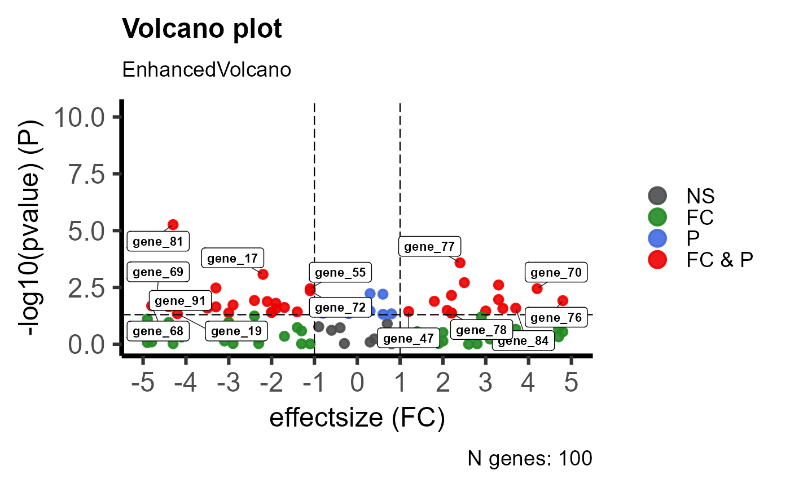

Plot EnhancedVolcano
Usage
plot_EnhancedVolcano(
genelist,
effectsize_threshold = 1,
pvalue_threshold = 0.05,
background_color = "black",
foreground_color = "white",
interactive = FALSE,
legend_labels = c("NS", "FC", "P", "FC & P"),
x_label = "effectsize (FC)",
y_label = "-log10(pvalue) (P)",
title = "Volcano plot",
subtitle = "EnhancedVolcano",
caption = paste0("N genes: ", nrow(genelist)),
label_size = 3,
legend_label_size = 14,
axes_label_size = 18,
point_size = 2
)Arguments
- genelist
UI value/list of tibbles/dataframes
- effectsize_threshold
numeric, default: 1, threshold for showing significance on effectsize axis
- pvalue_threshold
numeric, default: 0.05, threshold for showing significance on pvalue axis
- background_color
default: 'black', else character hexcolor or colorname
- foreground_color
default: 'white', else character hexcolor or colorname
- interactive
default: FALSE, else TRUE
- legend_labels
character vector, default: c('NS', 'FC', 'P', 'FC & P'), plot legend labels
- x_label
character, default: 'effectsize (FC)', plot x-axis label
- y_label
character, default: "'-log10(pvalue) (P)', plot y-axis label
- title
character, default: 'Volcano plot', plot title
- subtitle
character, default: 'EnhancedVolcano', plot subtitle
- caption
character, default: paste0("N genes: ", nrow(genelist)), plot caption
- label_size
numeric, default: 3, plot variable label size
- legend_label_size
numeric, default: 14, plot legend label size
- axes_label_size
numeric, default: 18, plot x- and y-axis lable sizes
- point_size
numeric, default: 2, plot point size
Examples
plot_EnhancedVolcano(
get(load(system.file("extdata", "example_genelist.rda", package = "goatea")))
)
#> Warning: Using `size` aesthetic for lines was deprecated in ggplot2 3.4.0.
#> ℹ Please use `linewidth` instead.
#> ℹ The deprecated feature was likely used in the EnhancedVolcano package.
#> Please report the issue to the authors.
#> Warning: The `size` argument of `element_line()` is deprecated as of ggplot2 3.4.0.
#> ℹ Please use the `linewidth` argument instead.
#> ℹ The deprecated feature was likely used in the EnhancedVolcano package.
#> Please report the issue to the authors.
#> Coordinate system already present.
#> ℹ Adding new coordinate system, which will replace the existing one.
#> Scale for x is already present.
#> Adding another scale for x, which will replace the existing scale.
#> Warning: ggrepel: 13 unlabeled data points (too many overlaps). Consider increasing max.overlaps
